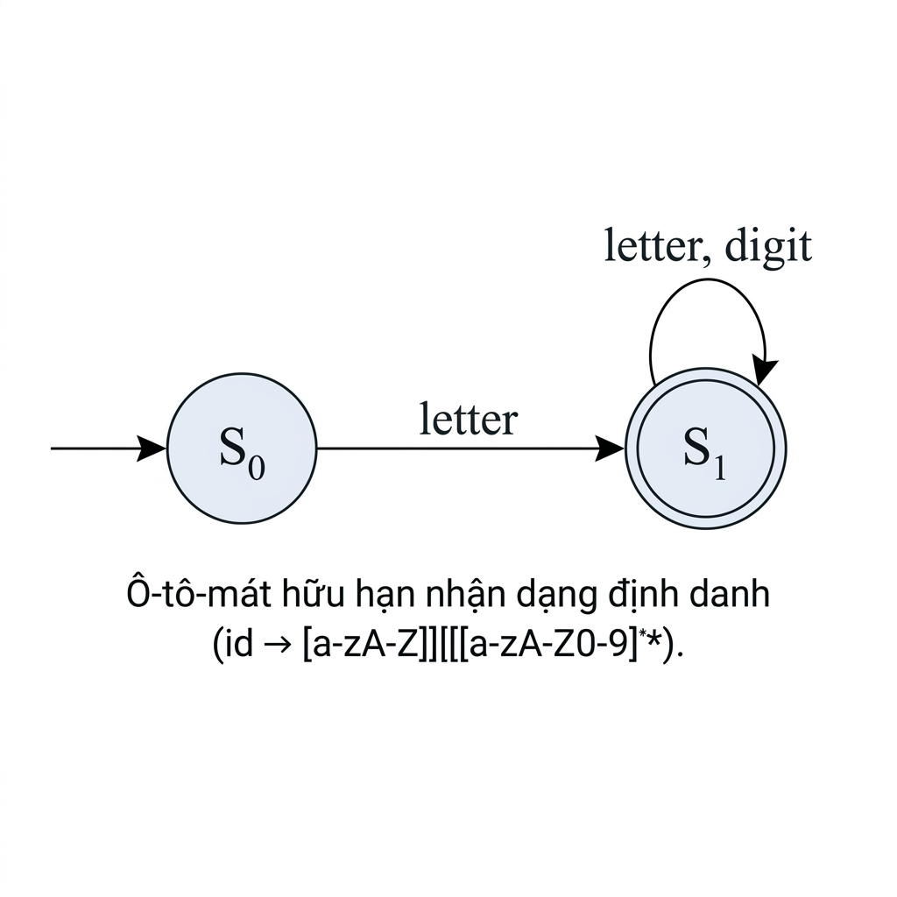

Mở đầu
Trong quá trình biên dịch, chương trình nguồn ban đầu chỉ là một dãy ký tự. Ví dụ, câu lệnh:
a = b + c * 60;đối với máy tính ở mức đầu vào chỉ là chuỗi các ký tự:
'a', ' ', '=', ' ', 'b', ' ', '+', ' ', 'c', ' ', '*', ' ', '6', '0', ';'Các pha sau của trình biên dịch không làm việc trực tiếp với từng ký tự rời rạc như vậy. Thay vào đó, chương trình cần được chia thành những đơn vị có ý nghĩa hơn, chẳng hạn định danh, toán tử, số nguyên, dấu chấm phẩy. Công việc này được thực hiện bởi pha phân tích từ vựng (lexical analysis), còn bộ phận thực hiện công việc đó thường được gọi là bộ quét (scanner) hoặc bộ phân tích từ vựng (lexer).
Từ tố và Biểu thức chính quy
Vị trí của phân tích từ vựng
Phân tích từ vựng là pha đầu tiên trong phần tiền tuyến (front-end) của trình biên dịch. Pha này nhận đầu vào là chuỗi ký tự (character stream) của chương trình nguồn và tạo ra chuỗi token (token stream) cho pha phân tích cú pháp.
| Pha xử lý | Đầu vào | Đầu ra |
|---|---|---|
| Phân tích từ vựng | Chuỗi ký tự | Chuỗi token |
| Phân tích cú pháp | Chuỗi token | Cây phân tích cú pháp |
| Sinh cây cú pháp trừu tượng | Cây phân tích cú pháp | Cây cú pháp trừu tượng |
| Phân tích ngữ nghĩa | Cây cú pháp trừu tượng | Cây đã bổ sung thông tin |
| Sinh mã trung gian | Cây đã kiểm tra | Mã trung gian |
| Tối ưu hóa | Mã trung gian | Mã trung gian đã tối ưu |
| Sinh mã đích | Mã trung gian | Mã đích |
Ví dụ, với câu lệnh a = b + c * 60;, bộ phân tích từ vựng không cố hiểu toàn bộ câu lệnh là một phép gán. Nó chỉ chia câu lệnh thành các token:
(ID, "a")
(EQUAL, "=")
(ID, "b")
(PLUS, "+")
(ID, "c")
(MUL, "*")
(INT, "60")
(SEMI, ";")Việc hiểu đây là câu lệnh gán, vế phải là biểu thức cộng, và phép nhân có độ ưu tiên cao hơn phép cộng thuộc về các pha sau — đặc biệt là phân tích cú pháp và phân tích ngữ nghĩa.
Từ tố (Token)
Từ tố (token) là đơn vị cơ bản mà bộ phân tích từ vựng trả về cho bộ phân tích cú pháp. Có thể hiểu token là những mảnh nhỏ nhất của chương trình có ý nghĩa riêng đối với ngôn ngữ lập trình. Trong cách nói thông thường, token đôi khi được dùng để chỉ hai khía cạnh khác nhau:
| Khía cạnh | Ý nghĩa | Ví dụ |
|---|---|---|
| Loại token | Nhóm hoặc kiểu của token | ID, INT, PLUS |
| Chuỗi cụ thể | Dãy ký tự thật sự xuất hiện trong mã nguồn | "count", "42", "+" |
Chuỗi ký tự cụ thể tạo thành token được gọi là trị từ vựng (lexeme). Ví dụ, trong token (ID, "count"), ID là loại token, còn "count" là lexeme. Xét đoạn mã C sau:
int count = 42;Bộ phân tích từ vựng có thể tạo ra chuỗi token:
(INT_KEYWORD, "int")
(ID, "count")
(ASSIGN, "=")
(INT_LITERAL, "42")
(SEMI, ";")| Lexeme | Loại token | Ý nghĩa |
|---|---|---|
int | INT_KEYWORD | Từ khóa khai báo kiểu số nguyên |
count | ID | Tên do người lập trình đặt |
= | ASSIGN | Toán tử gán |
42 | INT_LITERAL | Hằng số nguyên |
; | SEMI | Dấu kết thúc câu lệnh |
Một ngôn ngữ lập trình thực tế thường có rất nhiều loại token. Chẳng hạn, C có hơn một trăm loại token, bao gồm từ khóa, định danh, hằng số nguyên, hằng số thực, hằng ký tự, chuỗi, toán tử và dấu phân cách. Ví dụ về một số nhóm token phổ biến:
| Nhóm token | Ví dụ |
|---|---|
| Từ khóa | if, return, struct, double |
| Định danh | my_variable, printf, size |
| Số nguyên | 0, 42, 1000 |
| Số thực | 3.14, 6.02e23 |
| Ký tự | 'a', '\n', '0' |
| Toán tử | +, *, =, ==, <= |
| Dấu phân cách | (, ), {, }, ;, , |
x=10+20; không có khoảng trắng giữa các thành phần, nhưng scanner vẫn phải tách được thành các token đúng. Điều này cho thấy phân tích từ vựng dựa trên luật nhận dạng token, không chỉ dựa trên dấu cách.
Biểu thức chính quy
Để mô tả các loại token, ta thường dùng biểu thức chính quy (regular expression). Biểu thức chính quy là một cách hình thức để mô tả tập các chuỗi ký tự. Một biểu thức chính quy cơ bản có thể được xây dựng từ các thành phần sau:
| Dạng | Ý nghĩa | Ví dụ |
|---|---|---|
| Một ký tự | Khớp đúng một ký tự | c |
| Chuỗi rỗng (ε) | Khớp chuỗi không có ký tự nào | ε |
| Nối tiếp | Chuỗi của biểu thức thứ nhất theo sau bởi chuỗi của biểu thức thứ hai | RS |
| Lựa chọn | Khớp biểu thức bên trái hoặc bên phải | R | S |
| Lặp Kleene | Lặp không hoặc nhiều lần | R* |
| Ngoặc | Gom nhóm để tránh mơ hồ | (R | S)T |
Ví dụ, biểu thức a(b|c) mô tả hai chuỗi: ab và ac. Biểu thức ab* mô tả các chuỗi bắt đầu bằng a, sau đó là không hoặc nhiều ký tự b:
a
ab
abb
abbb
...Cần phân biệt giữa ab* và (ab)*. Biểu thức ab* nghĩa là a theo sau bởi không hoặc nhiều b. Trong khi đó, (ab)* nghĩa là lặp lại cả cụm ab không hoặc nhiều lần:
ε (chuỗi rỗng)
ab
abab
ababab
...Trong thiết kế scanner, biểu thức chính quy thường được dùng để mô tả các nhóm token như định danh, số nguyên, số thực hoặc khoảng trắng. Ví dụ, định danh trong một ngôn ngữ đơn giản:
letter -> [a-zA-Z]
digit -> [0-9]
id -> letter (letter | digit)*Biểu thức này nói rằng một định danh bắt đầu bằng chữ cái, sau đó có thể có không hoặc nhiều chữ cái hoặc chữ số. Các chuỗi như x, count, a1, student2025 là hợp lệ. Các chuỗi 1abc, _count, a-b thì không hợp lệ. Nếu muốn cho phép dấu gạch dưới _, luật có thể được viết lại:
id -> [a-zA-Z_] [a-zA-Z0-9_]*Khi đó, các tên như _temp hoặc student_name trở nên hợp lệ.
Ví dụ về biểu thức chính quy
Xét bài toán mô tả các hằng số số học cho một máy tính cầm tay đơn giản. Ta có thể định nghĩa từng phần như sau:
digit -> [0-9]
unsigned_int -> digit digit*Ở đây, digit là một chữ số từ 0 đến 9. unsigned_int là một số nguyên không dấu, gồm một chữ số đầu tiên, theo sau bởi không hoặc nhiều chữ số khác. Để mô tả số có phần thập phân và phần mũ:
unsigned_num -> unsigned_int ( . unsigned_int )? ( e ( + | - )? unsigned_int )?| Thành phần | Ý nghĩa |
|---|---|
unsigned_int | Phần nguyên bắt buộc |
( . unsigned_int )? | Phần thập phân có thể có hoặc không |
( e ( + | - )? unsigned_int )? | Phần mũ có thể có hoặc không |
( + | - )? | Dấu + hoặc - trong phần mũ là tùy chọn |
Các chuỗi hợp lệ: 1, 42, 3.14, 1e9, 6.02e23, 10e-3. Nếu muốn kiểm thử nhanh bằng Python:
import re
pattern = r"[0-9]+(\.[0-9]+)?(e(\+|-)?[0-9]+)?"
tests = ["1", "42", "3.14", "1e9", "10e-3", ".", "1e"]
for s in tests:
if re.fullmatch(pattern, s):
print(s, "accepted")
else:
print(s, "rejected")1 accepted
42 accepted
3.14 accepted
1e9 accepted
10e-3 accepted
. rejected
1e rejectedKý hiệu viết tắt
Khi viết biểu thức chính quy, một số ký hiệu viết tắt giúp biểu thức ngắn gọn và dễ đọc hơn.
| Ký hiệu | Ý nghĩa | Tương đương |
|---|---|---|
α+ | Một hoặc nhiều lần lặp | αα* |
α? | Có hoặc không có α | ε | α |
[xyz] | Một trong các ký tự được liệt kê | x | y | z |
[x-y] | Một ký tự trong khoảng từ x đến y | Phụ thuộc bảng mã |
[^x-y] | Một ký tự không nằm trong khoảng từ x đến y | Phủ định tập ký tự |
. | Một ký tự bất kỳ | Tùy quy ước của công cụ |
Ví dụ:
[0-9]+[a-zA-Z_][a-zA-Z0-9_]*(\+|-)?[0-9]+Trong biểu thức trên, dấu + cần được viết là \+ nếu công cụ biểu thức chính quy xem + là ký hiệu đặc biệt.
Vai trò của bộ phân tích từ vựng
Bộ phân tích từ vựng đảm nhiệm bốn công việc chính:
| Vai trò | Nội dung | Ví dụ |
|---|---|---|
| Nhận diện lexeme | Gom các ký tự thành chuỗi có ý nghĩa | count, 42, + |
| Trả về token | Gắn loại token cho lexeme | (ID, "count") |
| Bỏ qua ký tự không cần thiết | Bỏ khoảng trắng, tab, xuống dòng hoặc chú thích | , \n, // comment |
| Ghi nhận vị trí | Theo dõi dòng, cột để báo lỗi | line 3, column 5 |
Xét đoạn mã sau:
int x = 10; // initial value
x = x + 1;Scanner có thể bỏ qua khoảng trắng và chú thích, nhưng vẫn trả về các token cần thiết. Chú thích // initial value không được gửi sang parser vì nó không ảnh hưởng đến cấu trúc cú pháp. Tuy nhiên, scanner vẫn cần theo dõi dòng và cột. Nếu có lỗi như int x = @;, scanner cần báo rằng ký tự @ không khớp với bất kỳ luật token nào, và thông báo vị trí để người lập trình sửa lỗi.
Cách nhận dạng
Một ví dụ đơn giản
Sau khi đã biết token có thể được mô tả bằng biểu thức chính quy, câu hỏi tiếp theo là: làm thế nào để scanner nhận dạng token trong một chương trình nguồn? Có hai hướng chính: viết scanner thủ công hoặc xây dựng scanner có cấu trúc dựa trên ô-tô-mát hữu hạn (finite automaton). Xét một ngôn ngữ nhỏ có tập token:
| Token | Mẫu ký tự |
|---|---|
assign | := |
plus | + |
times | * |
lparen | ( |
rparen | ) |
id | [a-zA-Z][a-zA-Z0-9]* |
number | [0-9]+ |
Ngôn ngữ này cũng hỗ trợ hai kiểu chú thích giống C:
| Kiểu chú thích | Ý nghĩa |
|---|---|
// ... | Chú thích một dòng, kéo dài đến hết dòng |
/* ... */ | Chú thích khối, có thể kéo dài qua nhiều dòng |
Ví dụ chương trình và chuỗi token scanner cần tạo ra:
x := 10 + y * 2 // compute x
z := x + 1(ID, "x")
(ASSIGN, ":=")
(NUMBER, "10")
(PLUS, "+")
(ID, "y")
(TIMES, "*")
(NUMBER, "2")
(ID, "z")
(ASSIGN, ":=")
(ID, "x")
(PLUS, "+")
(NUMBER, "1")Bộ quét viết thủ công
Một cách đơn giản để xây dựng scanner là viết mã kiểm tra từng trường hợp. Cách này gọi là scanner viết thủ công hoặc scanner kiểu tùy biến (ad hoc scanner). Ý tưởng cơ bản:
Read next character
If whitespace:
skip
If letter:
read ahead to form identifier or keyword
If digit:
read ahead to form number
Otherwise:
check operator or delimiterdef scan(source):
i = 0
tokens = []
while i < len(source):
ch = source[i]
if ch.isspace():
i += 1
elif ch.isalpha():
start = i
i += 1
while i < len(source) and source[i].isalnum():
i += 1
tokens.append(("ID", source[start:i]))
elif ch.isdigit():
start = i
i += 1
while i < len(source) and source[i].isdigit():
i += 1
tokens.append(("NUMBER", source[start:i]))
elif ch == ':' and i + 1 < len(source) and source[i + 1] == '=':
tokens.append(("ASSIGN", ":="))
i += 2
elif ch == '+':
tokens.append(("PLUS", "+"))
i += 1
elif ch == '*':
tokens.append(("TIMES", "*"))
i += 1
else:
raise Exception(f"Invalid character: {ch}")
return tokens
print(scan("x := 10 + y * 2"))[('ID', 'x'), ('ASSIGN', ':='), ('NUMBER', '10'), ('PLUS', '+'), ('ID', 'y'), ('TIMES', '*'), ('NUMBER', '2')]Cách viết thủ công có ưu điểm là dễ hiểu và nhanh triển khai đối với ngôn ngữ nhỏ. Tuy nhiên, khi tập token tăng lên, scanner dễ trở nên dài, rối và khó bảo trì. Việc thêm token mới có thể ảnh hưởng đến token cũ. Các trường hợp như chú thích, chuỗi ký tự, ký tự thoát, toán tử nhiều ký tự hoặc lỗi từ vựng có thể làm mã xử lý phức tạp hơn rất nhiều.
=, ==, =>, scanner phải kiểm tra cẩn thận để không tách sai: == phải là một token, không phải hai token = liên tiếp. Điều này dẫn đến nhu cầu có một cách xây dựng scanner có cấu trúc hơn.
Ô-tô-mát hữu hạn
Một cách có hệ thống để nhận dạng token là dùng ô-tô-mát hữu hạn (finite automaton). Ô-tô-mát hữu hạn là một mô hình gồm các trạng thái và các chuyển trạng thái dựa trên ký tự đầu vào. Scanner bắt đầu từ trạng thái khởi đầu, đọc từng ký tự và di chuyển qua các trạng thái. Khi đạt đến trạng thái chấp nhận, nó có thể nhận ra một token.
Ví dụ, để nhận dạng định danh theo luật id → [a-zA-Z][a-zA-Z0-9]*, ta có thể mô tả ô-tô-mát như sau:

id → [a-zA-Z][a-zA-Z0-9]*).
| Trạng thái | Ý nghĩa |
|---|---|
S0 | Trạng thái bắt đầu |
S1* | Trạng thái chấp nhận định danh |
letter | Chữ cái (a-z, A-Z) — chuyển S0 → S1 |
letter | digit | Chữ cái hoặc chữ số — giữ nguyên S1 |
Với đầu vào abc123+, ô-tô-mát đọc lần lượt:
| Ký tự | Trạng thái sau | Ghi chú |
|---|---|---|
a | S1 | Bắt đầu định danh |
b | S1 | Tiếp tục định danh |
c | S1 | Tiếp tục định danh |
1 | S1 | Chữ số được phép sau ký tự đầu |
2 | S1 | Tiếp tục |
3 | S1 | Tiếp tục |
+ | Không thể tiếp tục | Kết thúc token abc123 |
count123, scanner phải nhận ra toàn bộ count123 là một định danh, không được tách thành count và 123. Với == trong C, scanner phải nhận ra đây là một token so sánh bằng, không phải hai token = liên tiếp.
Sinh ô-tô-mát hữu hạn
Khi token được đặc tả bằng biểu thức chính quy, ta có thể xây dựng scanner tự động qua ba bước chính:
Biểu thức chính quy → NFA
Chuyển mỗi biểu thức chính quy thành một NFA (Nondeterministic Finite Automaton). NFA dễ xây dựng trực tiếp từ biểu thức chính quy vì nó cho phép nhiều lựa chọn và chuyển trạng thái linh hoạt.
NFA → DFA
Dùng xây dựng tập con (subset construction) để chuyển NFA thành DFA (Deterministic Finite Automaton). DFA phù hợp hơn để cài đặt scanner hiệu quả vì mỗi ký tự đầu vào dẫn đến một trạng thái tiếp theo duy nhất.
DFA → DFA tối thiểu
Rút gọn DFA bằng cách gộp các trạng thái tương đương. Kết quả là DFA nhỏ hơn nhưng nhận dạng cùng một tập chuỗi.
| Bước | Đầu vào | Đầu ra | Mục đích |
|---|---|---|---|
| 1 | Biểu thức chính quy | NFA | Biểu diễn hình thức tập chuỗi |
| 2 | NFA | DFA | Tạo máy nhận dạng quyết định, dễ chạy |
| 3 | DFA | DFA tối thiểu | Giảm số trạng thái, tối ưu scanner |
| Thuật ngữ | Tiếng Anh | Ý nghĩa |
|---|---|---|
| Ô-tô-mát hữu hạn không đơn định | Nondeterministic Finite Automaton (NFA) | Tại một trạng thái, có thể có nhiều lựa chọn chuyển trạng thái |
| Ô-tô-mát hữu hạn đơn định | Deterministic Finite Automaton (DFA) | Với mỗi trạng thái và ký tự đầu vào, có nhiều nhất một chuyển trạng thái |
| DFA tối thiểu | Minimal DFA | DFA tương đương nhưng có số trạng thái nhỏ nhất |
Trong thực tế, người lập trình thường không tự tay làm tất cả các bước này khi xây dựng ngôn ngữ lớn. Các công cụ sinh lexer có thể tự động chuyển đặc tả token thành mã nhận dạng tương ứng.
Lỗi từ vựng
Trong quá trình quét mã nguồn, có thể xảy ra lỗi từ vựng (lexical error). Lỗi từ vựng xuất hiện khi scanner gặp một chuỗi ký tự không thể thuộc về bất kỳ token hợp lệ nào, hoặc gặp một token chưa kết thúc đúng cách.
| Loại lỗi | Ví dụ | Giải thích |
|---|---|---|
| Chuỗi chưa đóng | "hello BK | Thiếu dấu nháy đóng |
| Ký tự thoát không hợp lệ | "path\qfile" | \q không phải chuỗi thoát hợp lệ |
| Ký tự không thuộc token nào | x = @ + 1; | @ không được ngôn ngữ cho phép |
| Chú thích khối chưa đóng | /* comment | Thiếu */ |
Thông báo lỗi tốt nên chỉ rõ vị trí. Ví dụ:
Error at line 1, column 11: unclosed string literal
Error at line 1, column 5: invalid character '@'Một scanner tốt không chỉ phát hiện lỗi, mà còn cung cấp thông báo đủ rõ để người lập trình sửa lỗi. Vì vậy, việc ghi nhận dòng và cột của token không phải là chi tiết phụ, mà là nhiệm vụ quan trọng của phân tích từ vựng.
ANTLR
Giới thiệu ANTLR
Viết scanner thủ công giúp hiểu nguyên lý, nhưng khi ngôn ngữ lớn dần, cách viết này trở nên khó duy trì. Vì vậy, trong thực tế, người ta thường dùng các công cụ sinh bộ phân tích từ vựng và cú pháp từ đặc tả ngữ pháp.
ANTLR là viết tắt của ANother Tool for Language Recognition. Đây là một công cụ mạnh để sinh bộ phân tích từ vựng (lexer) và bộ phân tích cú pháp (parser) từ các luật ngữ pháp do người dùng định nghĩa. Tác giả của ANTLR là Terence Parr, giáo sư khoa học máy tính tại University of San Francisco. Phiên bản hiện đại thường dùng là ANTLRv4.
| Nhu cầu | Vai trò của ANTLR |
|---|---|
| Xây dựng ngôn ngữ nhỏ phục vụ học tập | Sinh lexer và parser nhanh |
| Thiết kế ngôn ngữ miền chuyên biệt | Đặc tả cú pháp rõ ràng bằng grammar |
| Phân tích mã nguồn | Tạo cây phân tích để xử lý tiếp |
| Làm bài tập về trình biên dịch | Tập trung vào AST, kiểm tra ngữ nghĩa, sinh mã |
Luật từ vựng trong ANTLRv4
Trong ANTLRv4, các luật token thường được gọi là luật từ vựng (lexer rules). Tên token phải bắt đầu bằng chữ cái in hoa. Quy ước này giúp ANTLR phân biệt lexer rule với parser rule. Ví dụ một tệp Hello.g4:
grammar Hello;
// integer literals
INTEGER : [0-9]+ ;
// identifiers
ID : [a-zA-Z_] [a-zA-Z_0-9]* ;
// punctuation
LPAREN : '(' ;
RPAREN : ')' ;| Token | Luật | Ý nghĩa |
|---|---|---|
INTEGER | [0-9]+ | Một hoặc nhiều chữ số |
ID | [a-zA-Z_] [a-zA-Z_0-9]* | Định danh bắt đầu bằng chữ cái hoặc _ |
LPAREN | '(' | Dấu ngoặc trái |
RPAREN | ')' | Dấu ngoặc phải |
Khi nhiều luật có thể khớp với cùng một đoạn đầu vào, ANTLRv4 sử dụng các nguyên tắc ưu tiên:
| Thứ tự | Nguyên tắc | Ý nghĩa |
|---|---|---|
| 1 | Khớp dài nhất | Chọn luật khớp được đoạn đầu vào dài nhất |
| 2 | Token ngầm định trước token tường minh | Nếu văn bản khớp token ngầm định, luật ngầm định có ưu tiên |
| 3 | Thứ tự định nghĩa | Nếu độ dài bằng nhau, luật được viết trước thắng |
IF : 'if'; được định nghĩa trước ID, chuỗi if sẽ được nhận là token IF. Nếu viết ngược lại, if có thể bị nhận thành ID, làm sai ý định thiết kế.
Ký hiệu trong ANTLRv4
ANTLRv4 dùng nhiều ý tưởng tương tự biểu thức chính quy, nhưng cú pháp có một số điểm riêng. Bảng sau tóm tắt các ký hiệu thường gặp:
| Ký hiệu | Ý nghĩa | Ví dụ |
|---|---|---|
~x | Ký tự bất kỳ trừ x | ~'"' |
~[a-z] | Ký tự bất kỳ không nằm trong tập [a-z] | ~[0-9] |
a..b | Khoảng ký tự từ a đến b | '0'..'9' |
[ ... ] | Tập ký tự | [a-zA-Z_] |
x+ | Một hoặc nhiều lần | [0-9]+ |
x* | Không hoặc nhiều lần | [a-z]* |
x? | Có hoặc không | '+'? |
x | y | Lựa chọn | '+' | '-' |
'lit' | Chuỗi hoặc ký tự cụ thể | 'while' |
. | Một ký tự bất kỳ | . |
Ví dụ nhận dạng chuỗi đơn giản (không xử lý ký tự thoát):
STRING : '"' ~'"'* '"' ;| Thành phần | Ý nghĩa |
|---|---|
'"' | Dấu nháy kép mở |
~'"'* | Không hoặc nhiều ký tự không phải dấu nháy kép |
'"' | Dấu nháy kép đóng |
Nếu muốn hỗ trợ ký tự thoát như \" hoặc \n, luật cần phức tạp hơn:
STRING: '"' (ESC | ~[\"\\])* '"';
fragment ESC: '\\' ["\\nrt];Một ví dụ nhỏ trong ANTLRv4
Một grammar hoàn chỉnh để nhận dạng số nguyên, định danh và dấu ngoặc có thể viết như sau:
grammar Hello;
// integer literals
INTEGER : [0-9]+ ;
// identifiers
IDENTIFIER : [a-zA-Z_] [a-zA-Z_0-9]* ;
// parentheses
OPEN_PAREN : '(' ;
CLOSE_PAREN : ')' ;
// whitespace
WHITESPACE : [ \t\r\n]+ -> skip ;Với đầu vào sum(123), lexer có thể sinh ra:
(IDENTIFIER, "sum")
(OPEN_PAREN, "(")
(INTEGER, "123")
(CLOSE_PAREN, ")")Luật WHITESPACE : [ \t\r\n]+ -> skip ; cho biết khoảng trắng, tab, xuống dòng sẽ bị bỏ qua, không tạo token trả về cho parser. Nếu đầu vào là sum ( 123 ), các khoảng trắng vẫn bị bỏ qua và chuỗi token vẫn giống như trên.
Hành động và lệnh
Trong ANTLRv4, một lexer rule có thể chứa khối hành động (action block). Đây là đoạn mã của ngôn ngữ đích được đặt trong { ... } và được thực thi trong quá trình nhận dạng token. Ví dụ:
INTEGER : [0-9]+ { print(self.text) } ;ANTLR cũng hỗ trợ lệnh (command) viết sau ký hiệu -> ở cuối rule. Ví dụ thường gặp nhất là skip:
WHITESPACE : [ \t\r\n]+ -> skip ;| Cơ chế | Cú pháp | Tác dụng |
|---|---|---|
| Khối hành động | { ... } | Chạy mã của ngôn ngữ đích khi khớp rule |
| Lệnh bỏ qua | -> skip | Không phát ra token |
| Lệnh đổi loại | -> type(T) | Phát ra token với loại T |
Mảnh luật (Fragment)
Trong ANTLRv4, mảnh luật (fragment) là phần luật có thể được dùng lại trong các lexer rule khác, nhưng bản thân nó không trực tiếp tạo token. Mảnh luật được định nghĩa bằng từ khóa fragment. Ví dụ:
grammar Hello;
INTEGER: DIGIT+ | '0' [Xx] HEX_DIGIT+;
fragment DIGIT: [0-9];
fragment HEX_DIGIT: [0-9A-Fa-f];| Rule | Vai trò |
|---|---|
INTEGER | Rule tạo token số nguyên |
DIGIT | Mảnh luật mô tả chữ số thập phân |
HEX_DIGIT | Mảnh luật mô tả chữ số thập lục phân |
Các chuỗi hợp lệ: 123, 0x1A, 0XFF. DIGIT và HEX_DIGIT không tự tạo token riêng — chúng chỉ được dùng như thành phần tái sử dụng bên trong rule INTEGER.
Mảnh luật giúp grammar gọn hơn, dễ đọc hơn và dễ bảo trì hơn. Ví dụ mở rộng:
FLOAT: DIGIT+ '.' DIGIT+;
INTEGER: DIGIT+;
fragment DIGIT: [0-9];Ở đây, cả FLOAT và INTEGER đều dùng lại DIGIT.
Tóm tắt chương
Phân tích từ vựng là pha đầu tiên của trình biên dịch, có nhiệm vụ chuyển chuỗi ký tự của chương trình nguồn thành chuỗi token. Token là đơn vị cơ bản để parser xử lý cú pháp, còn lexeme là chuỗi ký tự cụ thể tạo nên token trong mã nguồn.
skip, type, và có thể định nghĩa fragment để tái sử dụng các thành phần luật.